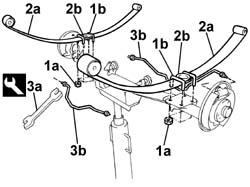
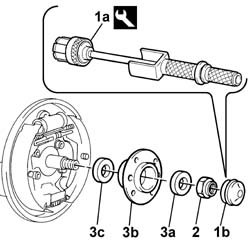
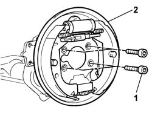
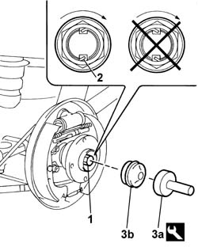

4420D20 rear suspension axle -replace- includes r+r, check, parts transfer and bleeding
- Path
- Procedures > 44 SUSPENSION AND WHEELS > 4420 REAR SUSPENSION > 4420D rear suspension axle/crossbeam > 4420D20 rear suspension axle -replace- includes r+r, check, parts transfer and bleeding
- Kind
- repair procedure (removal / refitting; the operation number is the code)
- Applies to
- all engines; all production periods
- Interactive page
- https://sloeber94.github.io/elrnDB-fDbl/en/#/2584761
Applies to: all engines; all production periods
 Removing
Removing
 Refitting
RefittingOp. 4450B13 REAR WHEELS (TWO) - R.R..
Op. 3320B34 REAR BRAKE DRUMS - R.R..
Op. 4420A35 REAR SUSPENSION DAMPERS - R.R. - CHECK WHEEL GEOMETRY SEPARATELY.
Op. 4420D10 REAR SUSPENSION AXLE - R+R INCLUDES BLEEDING.
1. Unscrew bolts (1a) securing caps (1b) retaining the leaf springs to the rear axle.
2. Remove leaf springs (2a) and buffer end stop brackets (2b).
3. Use tool (3a) to unscrew rigid brake pipes (3b) from the brake cylinders; release the pipes from the retaining bands on the axle and remove them.
 | Name | Country |
|---|---|---|
3a | Box wrench for brake fittings | 1.856.132.000 |

Applies to: all engines; all production periods
1. Use tool (1a) to remove hub cap (1b).
| Name | Country |
|---|---|---|
1a | Extractor | 1.847.014.000 |
2. Unscrew the nut securing the rear wheel hub (loosen inside the vehicle).
3. Remove spacer (3a), hub complete with bearings (3b) and inner spacer (3c).

Applies to: all engines; all production periods
1. Unscrew the shoe carrier plate bolts.
2. Remove the shoe carrier plate.

Applies to: all engines; all production periods
Refitting
RemovingTake a new rear axle.
Fit the shoe carrier plate and secure by tightening the relevant bolts to torque.
 | Fastening | Component | Ø | Value (daNm) |
|---|---|---|---|---|
- | Bolt | REAR BRAKE CARRIER DISC | M10 x 1.25 | 5 |
Fit the inner spacer, the hub with bearings and the external spacer to the stub axle.
Tighten a new wheel hub bolt in place; tighten the nut with the axle fitted to the vehicle.
Fit the rigid brake pipes to the retaining brackets on the rear axle.
Use an appropriate wrench to secure the brake pipes to the rear cylinders.
| Name | Country |
|---|---|---|
- | Box wrench for brake fittings | 1.856.132.000 |
Position the leaf springs and secure to the rear axle using retaining struts.
Screw in the nuts securing the leaf spring retainers to the rear axle.
Op. 4420D10 REAR SUSPENSION AXLE - R+R INCLUDES BLEEDING.
Op. 4420A35 REAR SUSPENSION DAMPERS - R.R. - CHECK WHEEL GEOMETRY SEPARATELY.
Op. 3320B34 REAR BRAKE DRUMS - R.R..
1. Tighten the rear wheel hub nut to torque.
| Fastening | Component | Ø | Value (daNm) |
|---|---|---|---|---|
1 | Nut | REAR WHEEL HUB WITH BEARINGS | M22 x 1.5 | 7 + 55° |
2. Stake the nut collar. The collar should be cut on the notch on the hub, on the side opposite that of tightening the nut, so that the safety lug prevents accidental loosening.
3. Use tool (3a) to fit hub caps (3b).
| Name | Country |
|---|---|---|
3a | Drift | 1.875.059.000 |

Applies to: all engines; all production periods
Op. 4450B13 REAR WHEELS (TWO) - R.R..
Op. 3380A04 HANDBRAKE - ADJUST TRAVEL.
Op. 0010T64 BRAKE AND/OR CLUTCH FLUID CHECK LEVEL AND TOP UP AS NECESSARY.
Applies to: all engines; all production periods; only with equipment: ABS
Op. 0010T66 EXTRAS FOR VERSIONS WITH ABS FOLLOWING OPERATION 0010T65.
Topics linked from this page (8)
- 0010T64 brake and or clutch fluid check level and top up as necessary
- 0010T65 hydraulic brake system bleed air
- 0010T66 manual gearbox oil check level and top up if necessary
- 3320B34 Rear brake DRUMS - R.R.
- 3380A04 handbrake - check travel
- 4420A35 rear suspension dampers - r r
- 4420D10 rear suspension axle - r+r includes bleeding
- 4450B13 rear wheels(2) r r